1
Leica
Brand & History
Leica_Oskar Barnak
Leica_35mm
Leica_Iconic photo
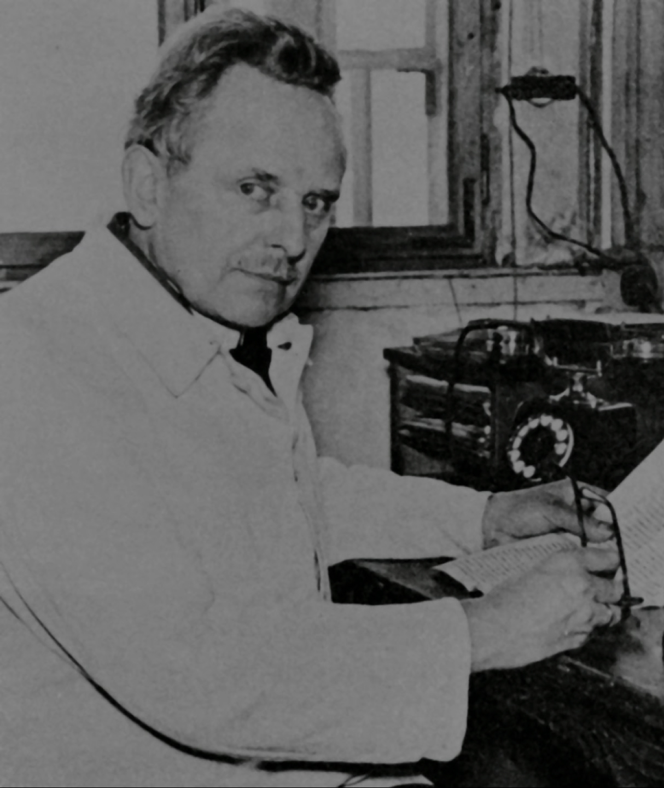
- Oskar Barnak
- 작은 네거티브 - 큰 사진. 라이츠 베츨라의 직원이자 사진의 선구자인 오스카 바르낙은 35mm필름 포맷의 스틸카메라를 처음으로 발명했습니다.
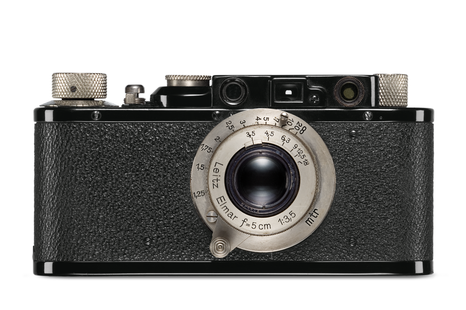
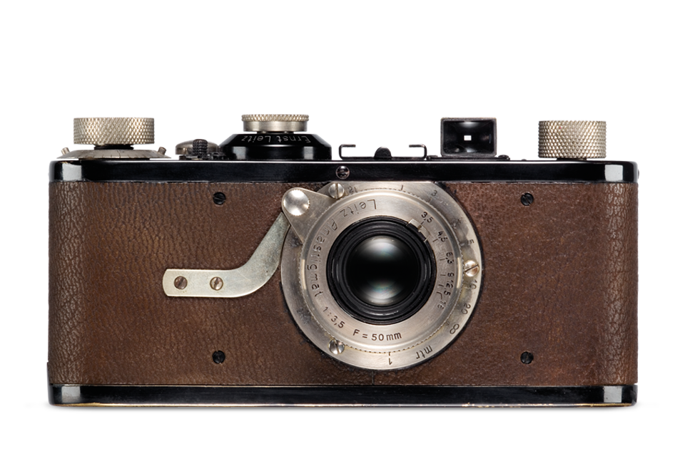
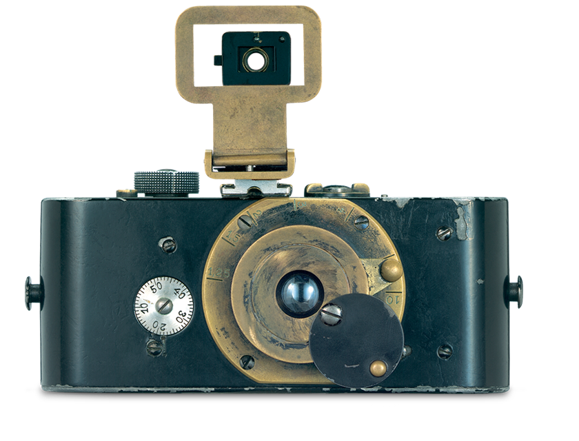
오스카 바르낙은 여가시간에 풍경사진을 주로 촬영하였는데 지병인 천식때문에 크고 무거운 대형 카메라를 들고 다니지 못했습니다. 그래서 그는 1913년도에 개인적으로 35mm 롤필름 매거진을 사용할 수 있는 세계 최초 소형 판형의 카메라 개발을 시작했습니다.
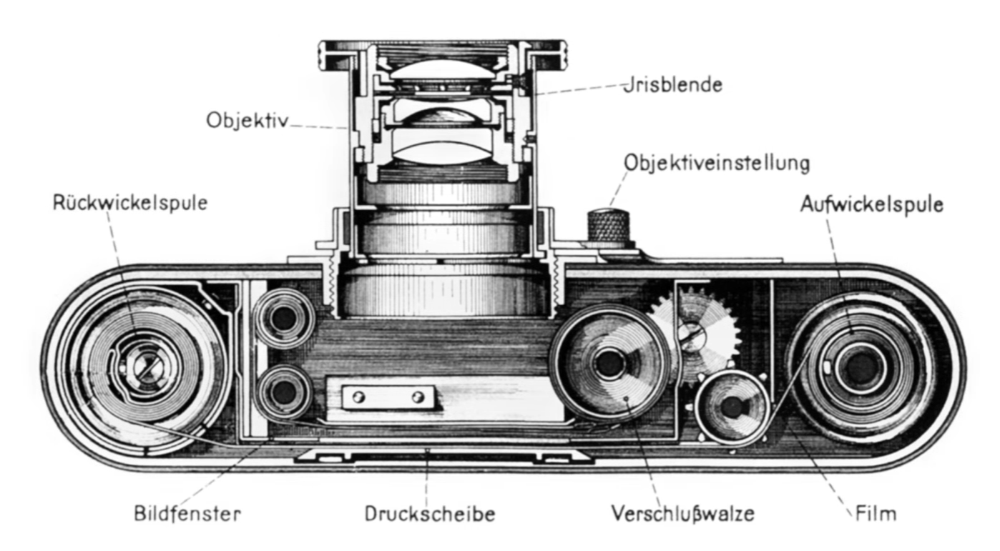
아날로그 35mm 크기의 소형 판형의 필름은 라이카카 채용한 이후 스틸카메라의 주류가 된 판형입니다. 현대의 디지털 카메라에서도 35mm 규격은 풀 프레임이라는 하나의 기준으로 사용되고 있습니다.
사진 한장이 주는 감동은 천개의 단어만큼 강합니다. 영원한 즐거운, 혹은 상상도 하지 못할 고통. 전설 속의 장소나 인물, 그리고 영원의 눈빛. 모두 사진 속에 담겨있습니다. 지난 100년동안 라이카 작가들은 이런 순간들을 담아왔습니다. 그리고 우리는 그들을 통해 그 순간을 함께 느꼈습니다.
- Man with bandage – Fred Herzog, 1968
-
사진에 초점을 맞추고, 완성된 그림을 기대하고, 행복감을 느끼며
필름에 영원한 순간을 포착하는 것은 Leica의 약자입니다.
왼쪽 Le Peintre de la Tour Eiffel ‒ Marc Riboud, 1953
본질적인 사진적 욕구에 대한 단호한 집중력. 퀄리티에 대한 엄격한 수준. 이러한 그들에겐 언제나 크리에이티브 툴(tool)로 라이카 M이 있었습니다. 그들이 촬영한 전설적인 사진들은 우리의 현실. 우리 주변의 세계에 큰 영향을 끼쳤습니다.

2
Leica
M System
-
M8
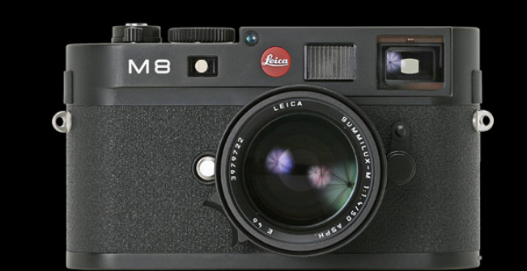
- 디지털 M의 시작
M시스템의 새로운 출발 - 라이카 M8은 2006년 10월 14일 공개된 라이카의 디지털 레인지 파이너 카메라입니다. 코닥의 APS-HCCD의 센서를 탑재하였으며 1030만화소입니다. M8의 디자인은 필름 디자인 MP와 M7에 비해 15%가량 두꺼운 디자인입니다. 이는 제품의 기본 베이스가 모두 고강도 마그네슘으로 교체되었기 때문입니다. 탑플레이트와 베이스 플레이트는 황동으로 만들어져 있으며, 실버 크롬 피니시와 블랙 크롬 피니시 색상이 있습니다.
- 디지털 M의 시작
-
M9
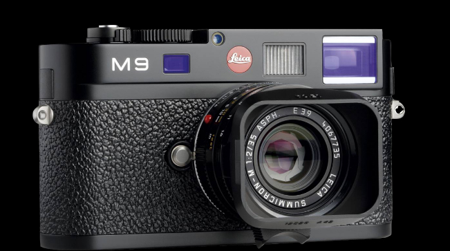
- 완전한 디지털 M
풀프레임 M시스템의 도입 - 라이카 M9은 2009년 10월 9일에 공개된 라이카의 풀프레임 디지털 레인지 파인더 카메라입니다. 코닥의 1,850만 화소 KAF-18500 CCD 센서를 탑재했습니다. M9의 디자인은 M8과 동일하며 M8에서 있었던 문제점들이 상당수 보완되었습니다.
- 완전한 디지털 M
-
M-E
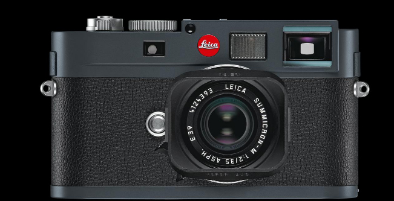
- 모두를 위한 M
훌륭한 엔트리 모델 - 라이카 M-E는 2012년 10월에 출시되었습니다. 센서는 M9과 동일한 코닥의 1,850만 화소 KAF-18500 CCD센서를 탑재하였습니다. 바디는 무연탄 회색 컬러를 사용하였으며, M9에 있던 프레임 라인 선택 레버와 USB 포트가 삭제되어 비교적 저렴하게 출시된 모델입니다.
- 모두를 위한 M
-
M
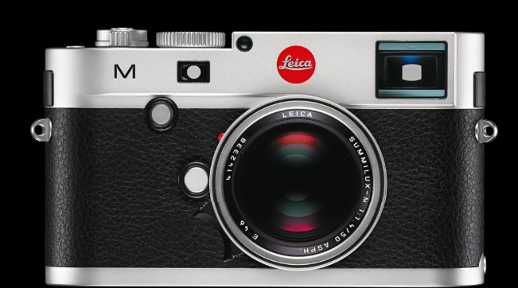
- M 새로운 혁신
혁신적으로 개선된 M - 2012년 10월에 공개된 M은 최초 CMOS센서를 탑재하여 향상된 감도와 노이즈 억제력을 가지고 있습니다. 이 센서는 벨기에의 CMOSIS사에서 설계되었으며 2,400만 화소입니다. 또 라이브 뷰가 가능하게 되어 초점 잡기가 훨씬 쉬워졌으며 M시리즈에 동영상 기능이 처음으로 탑재된 모델이기도 합니다. 전작에 비해 훨씬 과감하며 혁신적인 성능 개선으로 라이카 디지털 M시스템에 새로운 방향성을 제시한 모델입니다.
- M 새로운 혁신
-
M-P
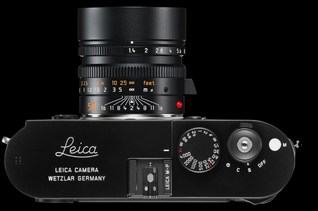
- 혁신에 완벽을 더하다
순수한 M에 대한 열정 - 라이카 M과 동일한 센서와 동일한 기능을 가졌지만 2GB의 메모리 버퍼를 장착하여 기존의 라이카 M보다 두배나 빠르고 긴 촬영이 가능해졌습니다. 디자인은 붉은 라이카 로고를 과감히 제거하고 클래식 라이카의 로고를 상판에 새겨 넣었습니다. 과감하지만 훌륭한 디자인을 제시하고 성능까지 안정화되어 수많은 라이카 매니아들을 사로잡은 모델입니다.
- 혁신에 완벽을 더하다
-
M10
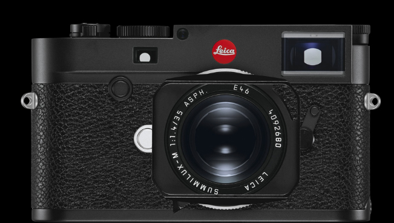
- 라이카의 유산과 기술적 진화
혁신 대신 진화를 선택하다 - 2017년 1월 19일에 발표한 라이카 M10은 전 모델과 비슷하면서도 많은 것이 바뀌었다고 말할 수 있습니다. M 디지털 시리즈 중 최초로 아날로그 M시리즈의 컴팩트한 외관을 따와 역대 디지털 M 중에서 가장 슬림합니다. ISO은 설정 다이얼을 상단으로 이동하여 전원을 키지 않은 상황에서도 빠르게 감도를 바꿀 수 있습니다. 또한 새로운 24MP 센서와 새로운 프로세서는 디지털 M을 새로운 경지로 끌어올려 려실제같은 디테일과 낮은 디지털 노이즈의 사진을 제공합니다.
- 라이카의 유산과 기술적 진화
LEICA
DAS WESENTLICHE